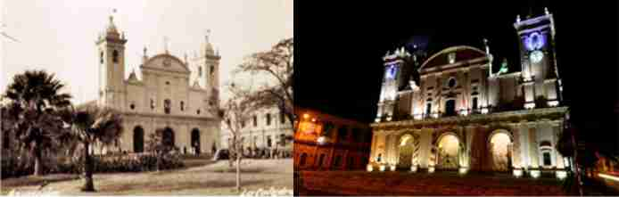

The Metropolitan Cathedral of Asunción, located in the Historic Center of the city, was the first Diocese of the Río de la Plata. Settled since colonial times, it is one of the most emblematic buildings in the capital, with its peculiar shape.
In addition to the rustic materials used for its construction (Adobe and palm trees), it must have undergone several transformations since 1539, the year of its first construction. Also due to the incipient rains and floods of the Paraguay River in each period of time, the construction had to be demolished and changed for a new one.
The last and current building model was built in the middle of the 19th century during the government of President Carlos Antonio López.
The last and current building model was built during the government of President Carlos Antonio López, who, in 1842, "ordered the old Cathedral to be demolished to build a new one on the same site with better architecture than any other." According to historians, they indicate that the true author of the design was the Master Architect Pascual Urdapilleta. In the year 1845, the works were very advanced, so much so that even without culminating, on October 27 of the same year, the building was inaugurated and blessed.
The book "Temples of Asunción" by Historian Margarita Durán Estragó says: "The temple consists of three naves, separated by two rows of semicircular arches with fluted pilasters." In the time of President Don Carlos Antonio López, new technology appears on the scene that leaves aside wood as a load-bearing structure to give way to masonry of different thicknesses and iron as part of the structure.
From the point of view of technology in Architecture there is progress insofar as the colonial load-bearing structure, which consisted of adobe and palm walls, is left aside, to give spaces to the load-bearing walls of ceramic brick masonry and plaster, also iron is used, which allows greater lengths between the structural supports. There is also a difference in the formal aspect, the building pattern of the colonial era is left behind to give rise to a building pattern that is characterized by the transition towards a facade architecture in religious and housing themes, although without neglecting the Architecture paraguaya of perimeter galleries, adopting masonry columns of octagonal shapes that replace wooden columns and others.
Although the main façade of this Church is of an extremely sober Neoclassical style, reminiscent of the Jesuit Churches of Europe, the building as a whole must be considered eclectic in style, that is, with a Neoclassical façade and a Colonial architectural plan (with external galleries).
The plan of this Cathedral is rectangular in shape and measures approximately 80m long x 32m wide.